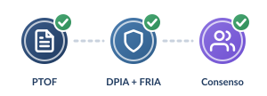
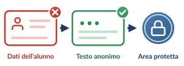
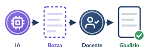

1
Condizioni preliminari d’istituto
Inclusione nel PTOFUso dell’IA a supporto di didattica e valutazione deliberato dal Collegio dei Docenti e approvato dal Consiglio d’Istituto.L. 107/2015, art. 1, c. 14 e 28
Valutazione DPIA/FRIADS e DPO hanno redatto la DPIA (art. 35 GDPR) e la FRIA con HUDERIA (art. 27 AI Act).D.M. 166/2025, par. 3.3
Consenso e informativaAcquisito il consenso genitoriale per gli under 14; attiva la gestione dell’opt-out.L. 132/2025, art. 4, c. 4 · D.M. 166/2025, par. 3.2
2
Privacy nella formulazione dei prompt
Anonimizzazione tassativaVietato inserire nei prompt nomi, cognomi, foto, nome della scuola o note su disabilità/DSA degli alunni.GDPR, art. 5, par. 1, lett. c · D.M. 166/2025, par. 3.2
Piattaforma sicuraSolo account educational d’istituto, con contratti ex art. 28 GDPR e clausola di Zero Data Retention per l’addestramento commerciale.
3
Validazione e sorveglianza umana
Esclusività del giudizio umanoL’IA serve solo a generare bozze di commento o rubriche; la valutazione finale è formulata esclusivamente dal docente.AI Act, art. 14 · D.M. 166/2025, par. 3.1
Controllo di allucinazioni e biasPrima di consegnare il feedback descrittivo, il docente verifica che l’output non contenga errori materiali, inesattezze o pregiudizi.D.Lgs. 62/2017
Registrazione ministerialeProgetto registrato con la «Scheda Progetto IA» su Piattaforma Unica.